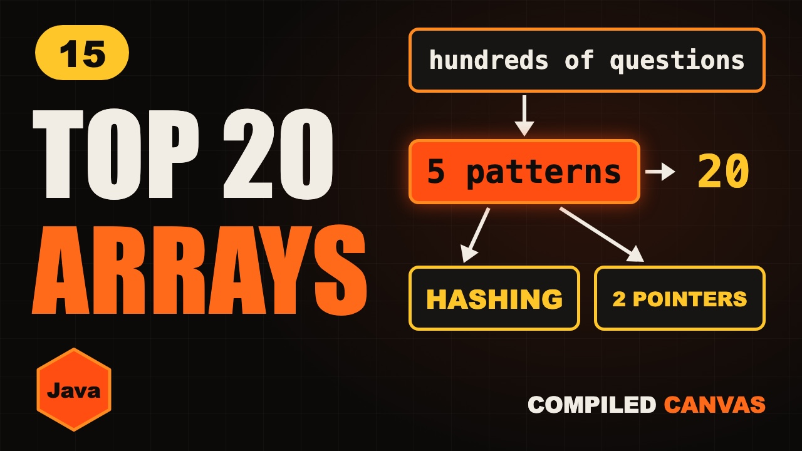

Top 20 Array Interview Questions in Java | 5 Patterns

The video goes live on 13 Nov 2026 at 6:00 PM IST. The notes are ready now.
?What this episode covers
There are hundreds of array questions, and memorizing them doesn't work. Almost all of them use five patterns: one pass, two pointers, hashing, prefix sums and windows, and a few famous tricks. This episode goes through twenty top interview questions grouped by pattern, with the one idea that cracks each one.
The questions run from largest and second largest, through remove duplicates, container with most water and three sum, to two sum, subarray sum equals k, product except self, Kadane's algorithm, sort colors and rotate array.
We finish with how to pick a pattern when you meet a new question. Sorted or in place, try two pointers. Asking whether you've seen something before, use a hash map. A range or numbers in a row, use prefix sums or a window.
◎What you'll be able to do
- One pass
- Two pointers
- Hashing
- Prefix and window
- Famous tricks
!The mistake to watch for
Memorizing answers. Practise spotting the pattern first, then the code gets easy.
✦Key moments tap one to jump there
- One pattern at a time
- Today's plan
- Pattern 1: one pass
- Pattern 2: two pointers
- Question 11: two sum
- More hashing
- Subscribe break
- Pattern 4: prefix and window
- Pattern 5: famous tricks
- How to pick a pattern
- Cheat sheet
- Quiz time
- Recap
- LeetCode homework
- Next episode: String vs StringBuilder vs StringBuffer
↗Full transcript
Read the whole lesson
There are hundreds of array questions. If you try to memorize them, you will lose.
But almost all of them use just five patterns. Learn the patterns, and new questions start to look familiar.
So here are twenty top questions, grouped by pattern. For each one, you get the one idea that cracks it.
Welcome back to Compiled Canvas. This is Episode Fifteen of our DSA series. Last time, we rotated and searched matrices.
Here's the plan. First, one pass questions. Then two pointers. Then hashing. Then prefix sums and windows. And then the famous tricks. A cheat sheet. And an easy quiz at the end.
Let's go.
Pattern one is the one pass. Walk once, and remember what you need.
Question one. Find the largest and smallest. Keep two variables, and update them as you walk.
Question two. Find the second largest. Keep first and second. When a new number beats first, the old first moves down to second.
Question three. Reverse an array. One pointer at each end, swap, and move inward.
Question four. Check if an array is sorted. Compare each number with the one before it. One drop means no.
Question five. Best time to buy and sell a stock. Keep the lowest price so far. Each day, ask, what if I sold today?
Pattern two is two pointers. If the array is sorted, or you must work in place, think of this first.
Question six. Remove duplicates from a sorted array. A slow pointer marks where to write. A fast one finds the next new number.
Question seven. Move all zeroes to the end. Copy every non zero to the front, and fill the rest with zeroes.
Question eight. Two sum on a sorted array. Start at both ends. Too big, move right inward. Too small, move left inward.
Question nine. Container with most water. Start at both ends. Always move the shorter wall, because the short wall limits the water.
Question ten. Three sum. Sort first. Fix one number, then run two pointers on the rest. Skip duplicates.
Pattern three is hashing. When you ask, have I seen this before, use a hash map.
Question eleven is the famous one, two sum, on an unsorted array.
At each number, work out the partner you need.
If the partner is in the map, you're done. If not, add this number and move on. One pass, O of n.
Question twelve. Contains duplicate. Add numbers to a hash set. If one is already there, you've found it.
Question thirteen. Longest consecutive sequence. Put everything in a set. Only start counting from a number with no left neighbour.
Question fourteen. Subarray sum equals k. Keep a running sum, and a map of the sums you've seen. If running sum minus k was seen, you've found one.
Quick pause, before we go further. If you're finding this video valuable, hit subscribe to Compiled Canvas, and turn on the bell. It's free, it takes one second, and it helps me keep making this complete DSA series for you. Alright, back to it.
Pattern four is prefix and window. If you need something about a range, don't add it again and again. Reuse what you already know.
Question fifteen. Product of array except self, with no division. For each spot, multiply everything on its left by everything on its right.
Question sixteen. Range sum queries. Build a prefix array once. Then any range is one subtraction.
Question seventeen. Maximum sum of k numbers in a row. Slide a fixed window. Add the new number, and drop the old one.
Pattern five is the famous tricks. You've already seen three of them on this channel.
Question eighteen. Maximum subarray. Kadane's algorithm. Join the old stretch, or restart here.
Question nineteen. Sort zeros, ones and twos. The Dutch National Flag. Three pointers, one pass.
Question twenty. Rotate an array by k. Reverse the whole array, then reverse the first k, then reverse the rest. Three reversals, no extra space.
So when you see a new question, ask these questions in order. Is it sorted, or in place? Try two pointers.
Are you asking, have I seen this before? Use a hash map.
Is it about a range, or numbers in a row? Use prefix sums or a window.
Your turn. Pause. Find two numbers in a sorted array that add up to a target, with no extra memory. Which pattern?
Two pointers. It's sorted, and there's no extra memory. You spotted it, without seeing the code.
So, here's the whole thing in one cheat sheet. Pause and screenshot this.
One pass: walk once and remember a little.
Two pointers: sorted or in place.
Hashing: have I seen this before?
Prefix: any range in one subtraction.
Window: numbers in a row.
Kadane's: join or restart.
Three reversals rotate an array.
Okay, quiz time. Three easy questions. Pause the video, think, and then hit play.
Question one. Two sum on an unsorted array. Which pattern?
Question two. Three sum, after sorting. Which pattern?
Question three. Range sum queries, asked one lakh times. Which pattern?
Ready?
Question one: Hashing. Ask, have I seen my partner?
Question two: Two pointers, after fixing one number.
Question three: Prefix sum. Each answer is one subtraction.
How many did you get right? Tell me in the comments: three out of three, two, or one.
Let's recap. Don't memorize questions. Learn the five patterns. Ask what the question gives you. Sorted means pointers, seen means hash. A range means prefix or window.
Your homework. Pick one question from each pattern, and solve it without looking. Start with LeetCode one, two sum. Then fifteen, three sum. And then five sixty, subarray sum equals k. Hints and Java answers are on compiled canvas dot com.
Next episode, we start strings. String versus string builder versus string buffer, and why one line can make your code crawl.
And don't forget to subscribe to Compiled Canvas, so you don't miss anything new in tech and the job market. Keep coding, stay consistent, and I'll see you in the next one.